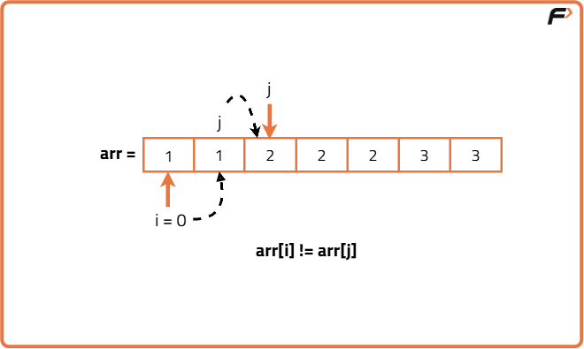
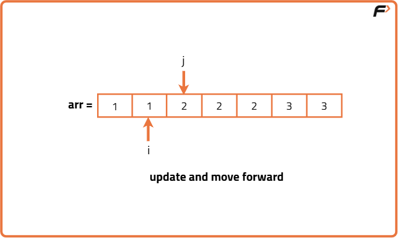
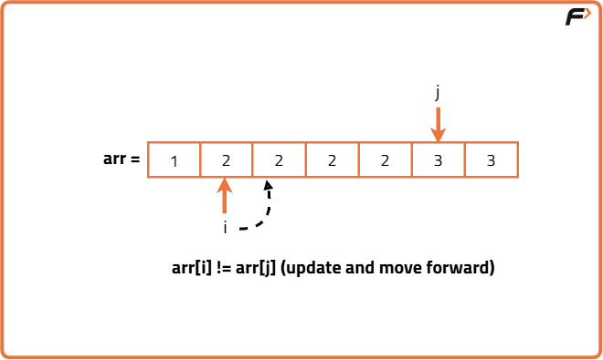
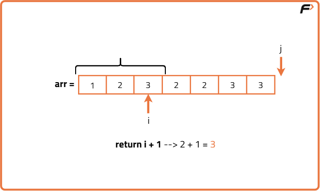

Remove Duplicates in-place from Sorted Array
Problem Statement: Given an integer array sorted in non-decreasing order, remove the duplicates in place such that each unique element appears only once. The relative order of the elements should be kept the same.
If there are k elements after removing the duplicates, then the first k elements of the array should hold the final result. It does not matter what you leave beyond the first k elements.
Examples
Input: arr[]=[1,1,2,2,2,3,3] Output: [1,2,3,_,_,_,_] Explanation: Total number of unique elements are 3, i.e[1,2,3] and Therefore return 3 after assigning [1,2,3] in the beginning of the array. Input: arr[]=[1,1,1,2,2,3,3,3,3,4,4] Output: [1,2,3,4,_,_,_,_,_,_,_] Explanation: Total number of unique elements are 4, i.e[1,2,3,4] and Therefore return 4 after assigning [1,2,3,4] in the beginning of the array.
Disclaimer: Here is the practice link to help you assess your knowledge better. It's highly recommend trying to solve it before looking at the solution.
Brute Force Approach
Algorithm
Since we need to store only unique elements, we can use the set data structure. We can insert all the elements of the array in the set irrespective of their frequency as set only allows one occurence of each element.
- Declare a set and insert all the elements of the array into the set.
- The number of unique elements in array is equal to size of the set.
- Traverse the set and fill the first k indices with elements in set.
Code
#include <bits/stdc++.h>
using namespace std;
// Solution class containing removeDuplicates method
class Solution {
public:
// Removes duplicates using unordered_set and returns count of unique elements
int removeDuplicates(vector<int>& nums) {
// Unordered set to store elements we have already seen
unordered_set<int> seen;
// Index where the next unique element will be written
int index = 0;
// Loop over each element in the array
for (int num : nums) {
// If num is not in seen, it's unique
if (seen.find(num) == seen.end()) {
// Add this num to the set of seen numbers
seen.insert(num);
// Overwrite nums[index] with this unique num
nums[index] = num;
// Move index forward
index++;
}
}
// Return count of unique elements
return index;
}
};
int main() {
vector<int> nums = {0,0,1,1,1,2,2,3,3,4};
Solution sol;
int k = sol.removeDuplicates(nums);
cout << "k = " << k << "\nArray after removing duplicates: ";
for (int i = 0; i < k; i++) {
cout << nums[i] << " ";
}
cout << endl;
}
Complexity Analysis
Time Complexity: O(N), We traverse the entire array and insert elements into set.Space Complexity: O(N), additional space used to store elements in set.
Optimal Approach
Algorithm
Instead of using a set to store the unique elements, we can implement a two pointer strategy to optimize the space. Since the array is sorted, we know that all the duplicate values will be adjacent to each other.
- Begin at the first position, which will always be part of the final unique list.
- Move through the list one item at a time, comparing the current item with the most recently kept unique item.
- If the current item is the same as the last kept one, skip it because it’s a duplicate.
- If it’s different, place it right after the last kept unique item to keep all unique values grouped at the front.
- Continue until every element in the list has been checked. The first part of the list now contains all the unique values in their original order, and the rest can be ignored.




Code
#include <bits/stdc++.h>
using namespace std;
// Class to hold the solution logic
class Solution {
public:
// Function to remove duplicates from sorted array in-place
int removeDuplicates(vector<int>& nums) {
// If array is empty, return 0 directly
if (nums.empty()) return 0;
// Pointer for the position of last unique element
int i = 0;
// Traverse the array starting from the second element
for (int j = 1; j < nums.size(); j++) {
// If current element is different from last unique element
if (nums[j] != nums[i]) {
// Move pointer for unique element forward
i++;
// Place the new unique element at the next position
nums[i] = nums[j];
}
}
// i is index of last unique element, count = i + 1
return i + 1;
}
};
int main() {
vector<int> nums = {0,0,1,1,1,2,2,3,3,4};
Solution sol;
int k = sol.removeDuplicates(nums);
cout << "Unique count = " << k << "\n";
cout << "Array after removing duplicates: ";
for (int x = 0; x < k; x++) {
cout << nums[x] << " ";
}
cout << endl;
}
Complexity Analysis
Time Complexity: O(N), We traverse the entire original array only once.Space Complexity: O(1), constant additional space is used to check unique elements.